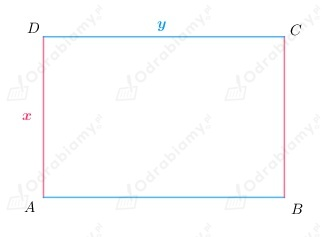
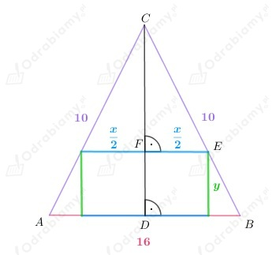

a)
Przyjmijmy oznaczenia jak na rysunku poniżej:

Z treści zadania wiemy, że:
Zatem:
Założenia:
zatem:
Zapisujemy funkcję opisującą pole prostokąta w zależności od x:
Należy wyznaczyć argument dla którego funkcja P przyjmuje wartość największą.
Zauważamy, że funkcja opisująca pole prostokąta jest funkcja kwadratową.
Ramiona paraboli będącej wykresem funkcji kwadratowej P są skierowanie w dół zatem
funkcja przyjmuje wartość największą w wierzchołku.
Wyznaczamy pierwszą współrzędną wierzchołka paraboli:
Wobec tego wymiary prostokąta spełniającego warunki zadania, który ma największe pole, to:
Odp: Prostokąt spełniający warunki zadania jest kwadratem o boku długości 15 cm.
b)
Przyjmijmy oznaczenia jak na rysunku poniżej:

Z treści zadania wiemy, że:
Skoro trójkąt ABC jest trójkątem równoramiennym, to:
Wobec tego możemy wyznaczyć |DC|:
Zauważamy, że trójkąty DBC i FEC są podobne na podstawie cechy kąt-kąt-kąt.
Wobec tego:
założenia:
Wyznaczamy funkcję opisującą pole prostokąta w zależności od zmiennej x:
Należy wyznaczyć argument dla którego funkcja P przyjmuje wartość największą.
Zauważamy, że funkcja opisująca pole prostokąta jest funkcja kwadratową.
Ramiona paraboli będącej wykresem funkcji kwadratowej P są skierowanie w dół zatem
funkcja przyjmuje wartość największą w wierzchołku.
Wyznaczamy pierwszą współrzędną wierzchołka paraboli:
Wobec tego wymiary prostokąta spełniającego warunki zadania, który ma największe pole, to:
Wobec tego największe pole takiego prostokąta, to:
Odp: Prostokąt spełniający warunki zadania ma pole równe 24 cm2.